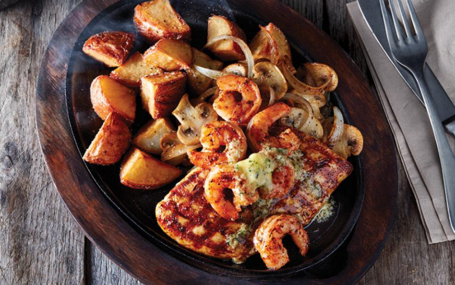
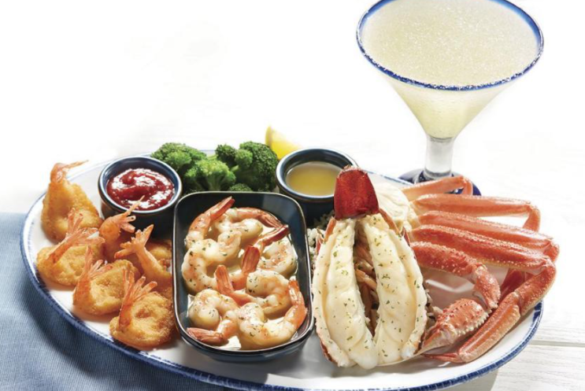

Shredded mozzarella for the kulcha stuffing but you can also use Amul processed cheese or a combination of cheddar and mozzarella. Mozzarella melts and gives you that cheese pull which won't happen if you use regular Amul Cheese. Chaat Masala adds an amazing tanginess that's hard to beat. We call the flavour 'chatpata' in Hindi. If you can source chaat masala, please do. If you can't, you can also switch things up with some taco seasoning, or cajun spice mix - it'll be a different flavour but still so good.
Serve them in a garlic sauce that was spicy, soupy and so irresistible. The trick was to add them to bubbling sauce just before serving so that the fried wonton covering was still crisp, but just soaking with sauce. It's a fine balance that mum was treading with this recipe, but it always worked. By the time we were served these, the covering would become softer but still hold it's own and the sauce would permeate the insides to make the noodle filling even better.
"Food can be very transformational, and it can be more than just about a dish. That’s what happened to me when I first went to France. I fell in love. And if you fall in love, well, then everything is easy."" – Alice Waters
The Most-Popular Dishes at America's Top Chain Restaurants
| Food name | Description | Image |
|---|---|---|
| Applebee's: Bourbon Street Chicken and Shrimp | This iconic and ever-evolving chain, nothing embodies "eatin' good in the neighborhood" quite like the Bourbon Street Chicken and Shrimp — a heap of Cajun-seasoned chicken and blackened shrimp in garlic butter, served on a sizzling cast-iron platter along with sauteed mushrooms, onions and crispy red potatoes. Since December 2015, Applebee's has served more than 46 million of these dishes. |  |
| Red Lobster: Ultimate Feast | Come for the often-imitated, never-duplicated Cheddar Bay Biscuits. Stay for the Ultimate Feast, Red Lobster's fan-favorite entree. In this case, "feast" is not hyperbole: It's a platter heaped with tender Maine lobster tail, steamed North American snow crab legs and garlic shrimp scampi — in addition to butterflied, hand-breaded, golden fried shrimp. Remember to save room for the parade of all-included salad, coleslaw and biscuits.. |  |